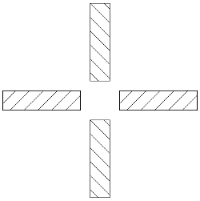
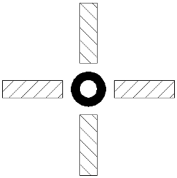

Classical cross test is shown on picture 1. It can measure horizontal and vertical dissociated phoria.
During examination patient can independently:
Examination results are announce as two numbers separated by slash. First number concern horizontal and second vertical phoria. Both number are expressed in minutes of angle represented by apostrophe. Both results are calculated from following equation on the basics of movement suitable cross part x and distance from monitor l.
Cross test with central stimulus is presented on picture 2. It's independent modification of classical cross test, so there are no data about result interpretation.
During examination patient can independently move parts of cross as previous.
Result is calculated and presented as previous.

